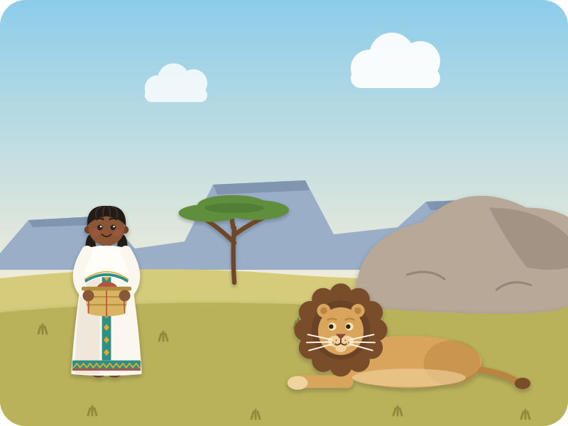
A folk tale from Ethiopia
The Lion's Whiskers
"Story, story — are your ears open?" Kai: "Open!"
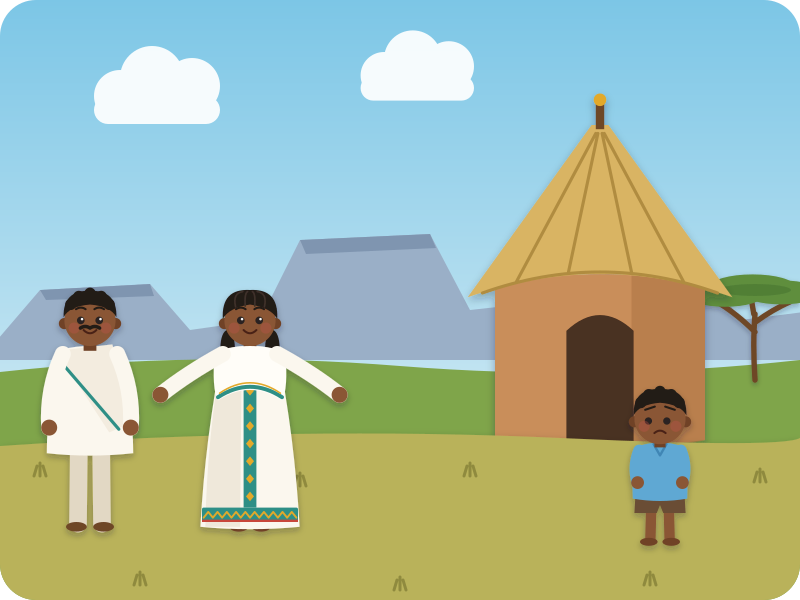
High in the hills of Ethiopia, a woman called Bizunesh married a kind man, and came to live in his round house.
The man had a little boy called Abebe. Bizunesh wanted Abebe to love her very much. But Abebe was shy, and sad, and he would not even look at her.
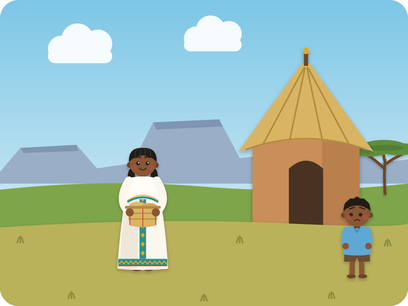
Bizunesh baked him warm bread. She gave him hugs. She asked him to play, again and again.
But the harder she tried, the more Abebe turned away. "Go away!" he said, and ran off. Kai, what does sad Abebe's face look like?
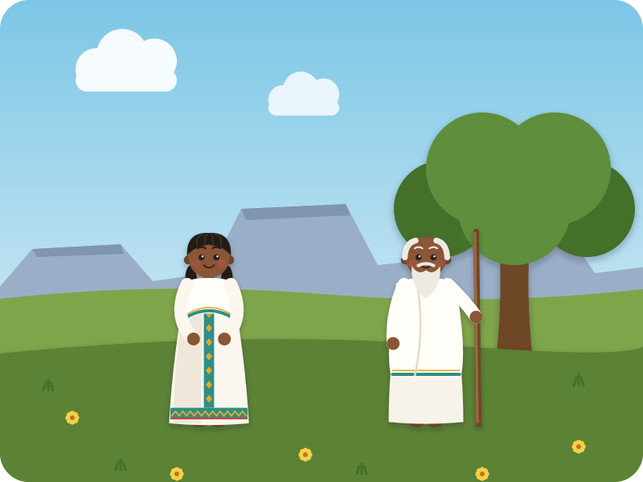
So Bizunesh went to see a wise old man on the hill. "Please make me a magic potion," she said, "so Abebe will love me."
"I can," said the wise old man. "But first, bring me three whiskers… from a living lion."
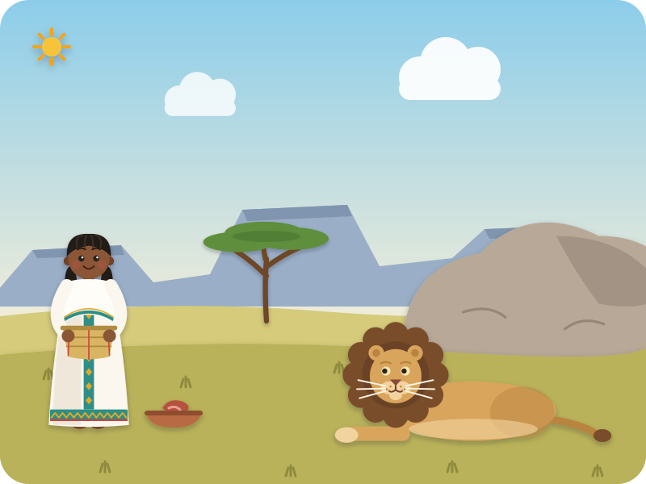
A lion! Bizunesh's knees went wobbly. But she took a dish of meat, and walked towards the lion's rocks.
"Slowly, slowly, step by step." Kai tiptoes his fingers
When she was still far away, she put the dish down, and went home. That was day one. Kai holds up one finger
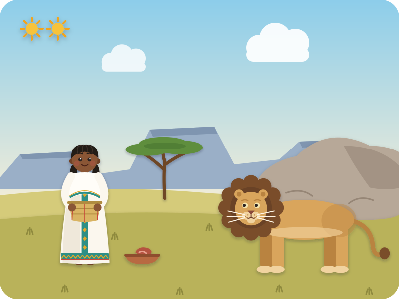
The next day she came back, a few steps closer. "Slowly, slowly, step by step."
The lion stood up. He sniffed the air. Kai sniffs like a lion He did not roar. He was just curious. That was day two. two fingers!
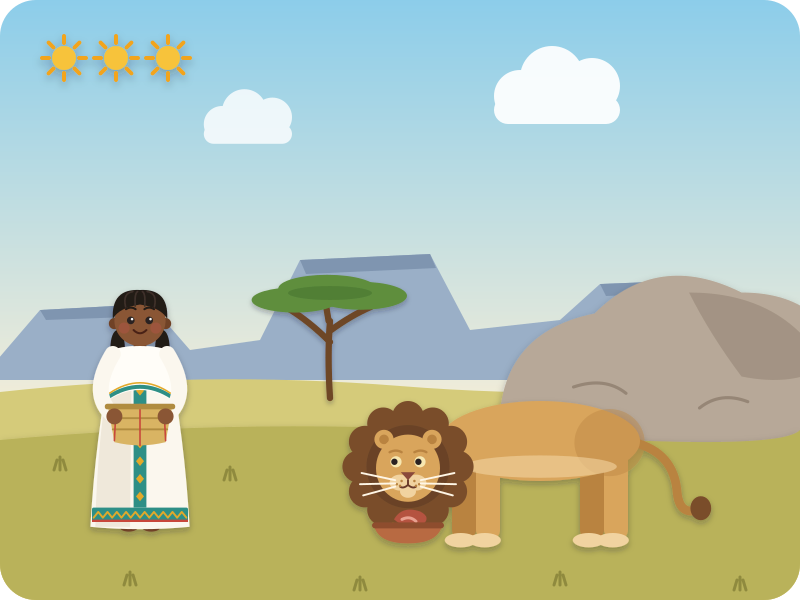
The next day, a little closer still. Bizunesh put the dish down, stepped back, and stood very still.
And the lion came… and ate it all up! Munch, munch. That was day three. three fingers!
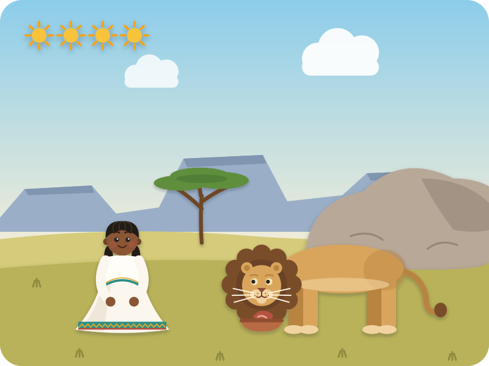
"Slowly, slowly, step by step." Kai joins in
This time Bizunesh sat down on the grass, quiet as a mouse, and the lion ate his dinner not far from her. That was day four. four fingers!
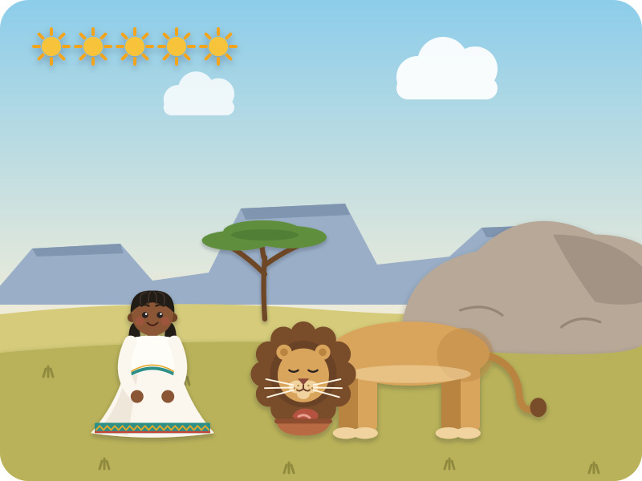
On day five a whole hand! the lion did not wait at his rocks. He came padding over to meet her.
And he ate his dinner right beside her, as gentle as a big pussycat.
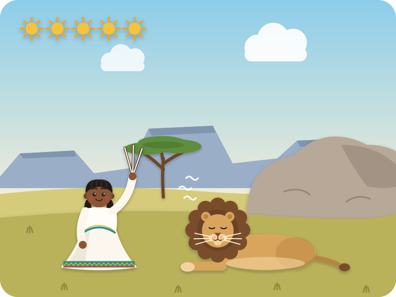
The lion was full and sleepy. Purrrr… Kai purrs
Very, very gently, Bizunesh took three whiskers. Kai counts: one, two, three! The lion just blinked, and went back to sleep.
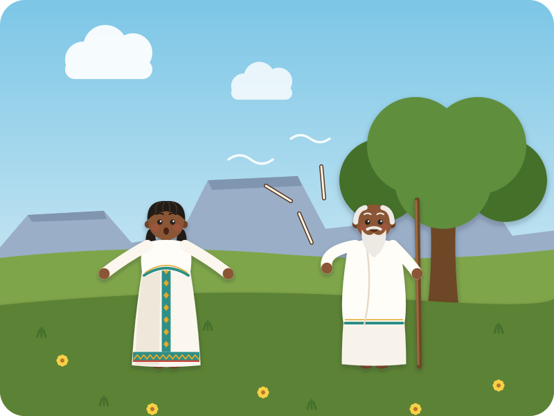
She ran to the wise old man. "Here are three whiskers from a living lion! Now make the potion!"
He smiled and let the whiskers blow away on the wind. "You don't need a potion. Be patient with the boy, the way you were with the lion."
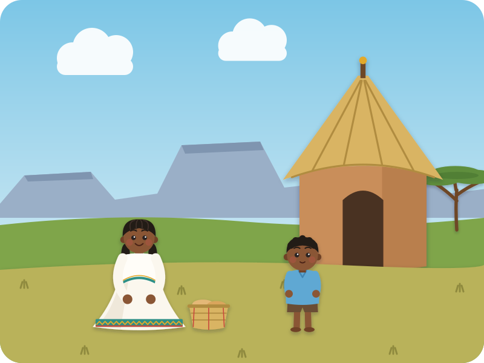
So Bizunesh stopped chasing Abebe. She just sat nearby, with warm bread, and told stories, and waited.
"Slowly, slowly, step by step." all together! Day by day, Abebe came a little bit closer.
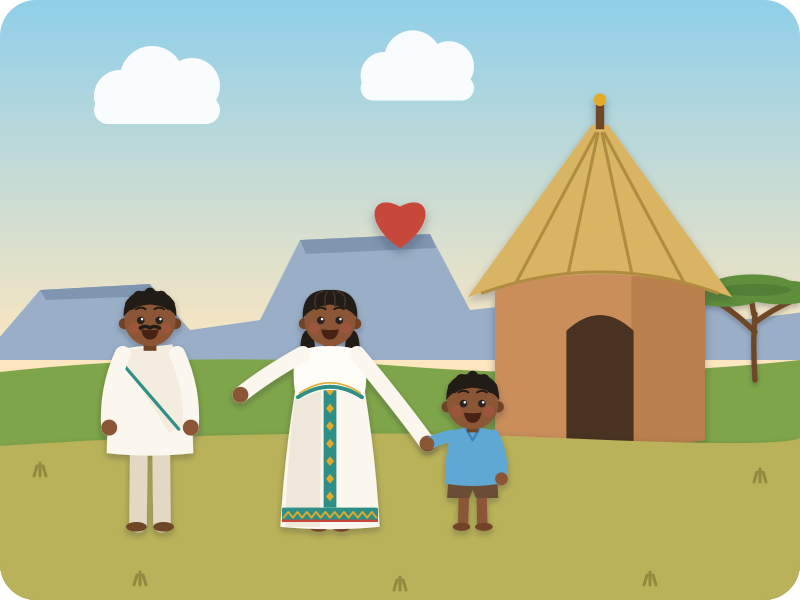
Until one evening, Abebe came all the way up to her… and took her hand.
And from then on, he loved his new mum, and she loved him. Kai, give somebody a big hug!
The End
"Snip, snap, snout — this tale's told out."
Swipe back to read it again
Driving? Tell it without the page · six beats
The picture book is for home, bedtime, or a passenger. In the car, tell it from memory — bold is Kai's part.
- Bizunesh comes to live with a little boy, Abebe, and wants him to love her, but he's shy and sad and runs away.
- A wise old man says, "First bring me three whiskers from a living lion!"
- Each day she carries meat towards the lion: "Slowly, slowly, step by step", and Kai counts the days: one, two, three, four, five!
- The lion watches, then sniffs, then eats, then eats right beside her, as gentle as a pussycat: purrrr.
- She gently takes three whiskers (one, two, three!), but the wise man lets them blow away: "Be patient with the boy, the way you were with the lion."
- She waits, kind and quiet, "Slowly, slowly, step by step", until Abebe takes her hand and loves her.
After the story · car-friendly wondering
"How many days did it take the lion to be her friend? Can you count them on your fingers?"
"Why did Abebe run away when Bizunesh tried so hard?"
"If a shy new friend came to play, how could you go slowly, slowly, step by step?"
Where this story comes from
"The Lion's Whiskers" is a folk tale from Ethiopia, often credited to the Amhara people. Russell Davis and Brent Ashabranner, who gathered folk tales in Ethiopia for school readers in the 1950s, used it as the title story of their collection The Lion's Whiskers: Tales of High Africa (1959), later revised as The Lion's Whiskers and Other Ethiopian Tales (1997). We haven't been able to check the wording of their version, and storytellers who retell it differ in the details. The picture book most families meet is Nancy Raines Day's The Lion's Whiskers: An Ethiopian Folktale (Scholastic, 1995), illustrated with cut-paper collage by Ann Grifalconi. In her telling a stepmother called Fanaye hopes to win the love of her husband's son, Ababe; a medicine man asks for three whiskers from a fierce lion for a love potion; she wins the lion's trust slowly, and learns that the same patience is what wins the boy. The story has a well-known cousin in Korea, "The Tiger's Whisker", where a wife tames a tiger to learn how to be patient with her unhappy husband; Harold Courlander retold it in The Tiger's Whisker and Other Tales and Legends from Asia and the Pacific (1959). Bizunesh is the stepmother's name in the widely retold version that appears to go back to Davis and Ashabranner's collection (where the boy is usually Segab); we kept her name and renamed the boy Abebe, close to Day's Ababe. The wise old man and the day-by-day feeding, bringing the meat a little closer each time, belong to that traditional telling. This retelling is our own, for a 4-year-old, and these parts are ours: the five counted days, the wording of the refrain, the calm and curious lion, the whiskers blowing away on the wind, and the hand-holding ending. In the pictures Bizunesh wears a white habesha kemis dress with a woven tibeb border and a netela shawl, and the family lives in a round thatched tukul below flat-topped highland mountains.